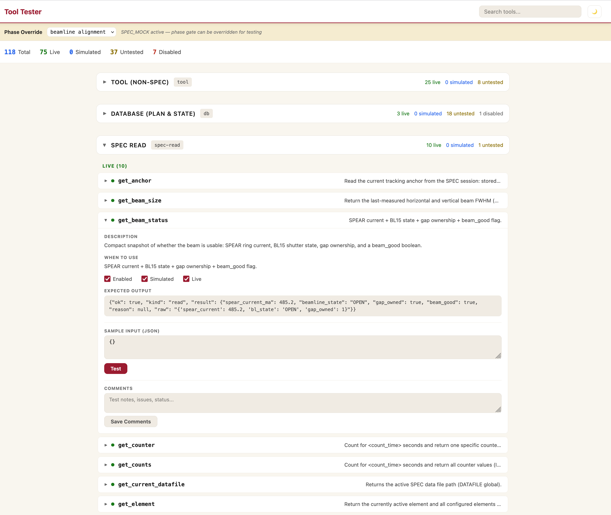

Agent design, tool system, and safety model behind the autonomous beamline agent
Dean Skoien
Each agent is a Claude Code process with a role-specific system prompt and tool allowlist
(my horse works fine)
LLMs are capable. The accompanying software architecture does not need to be a hugely elaborate system of "making them good enough" — it's about setting up appropriate guardrails for efficiency and safety.

We have only 30 minutes left, lets focus on sample 2
Steering acknowledged. Will run 7 scans on Sample 2 with the time remaining.
Unable to locate sample 2. Pausing for further input.